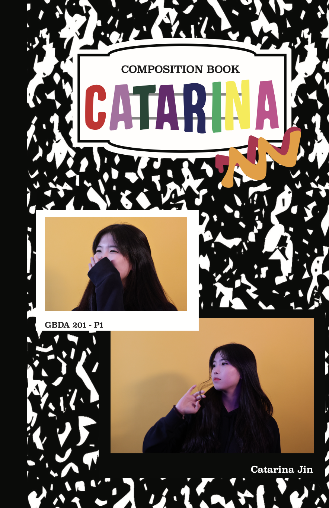
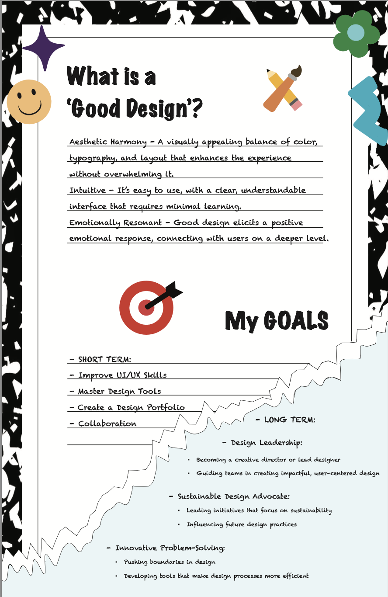
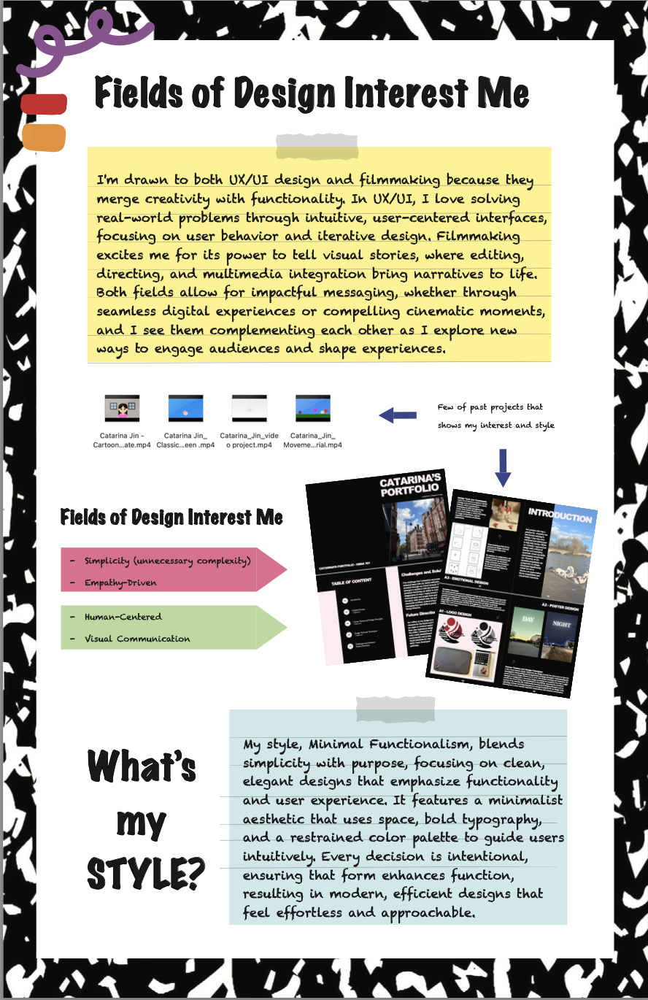
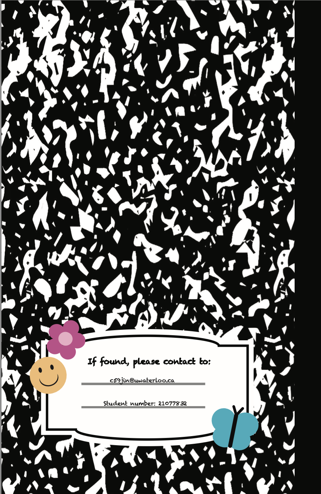

Welcome to my personal website, where you can learn more about me, my projects, and how to get in touch. Explore the About page to know my background, check out my Portfolio to see my work, and visit the Contact page to connect with me!



Here is a sneak peek of one of my recent projects. Visit my 'Portfolio' to discover more of my work and see how I bring ideas to life.